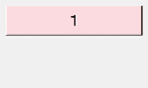

実行例３
import tkinter as t
count = 1
def func(event):
global count
count += 1
but[ 'text' ] = str( count )
app = t.Tk()
app.title( 'テスト' )
app.geometry( '250x150' )
but = t.button( text = str( count ), font = ('MS Gothic', 20), background = '#FFDFDF' )
but.place( x = 10, y = 10, width = 230, height = 50 )
but.bind( '<Button-1>', func )
app.mainloop()
実行結果（gif画像）
